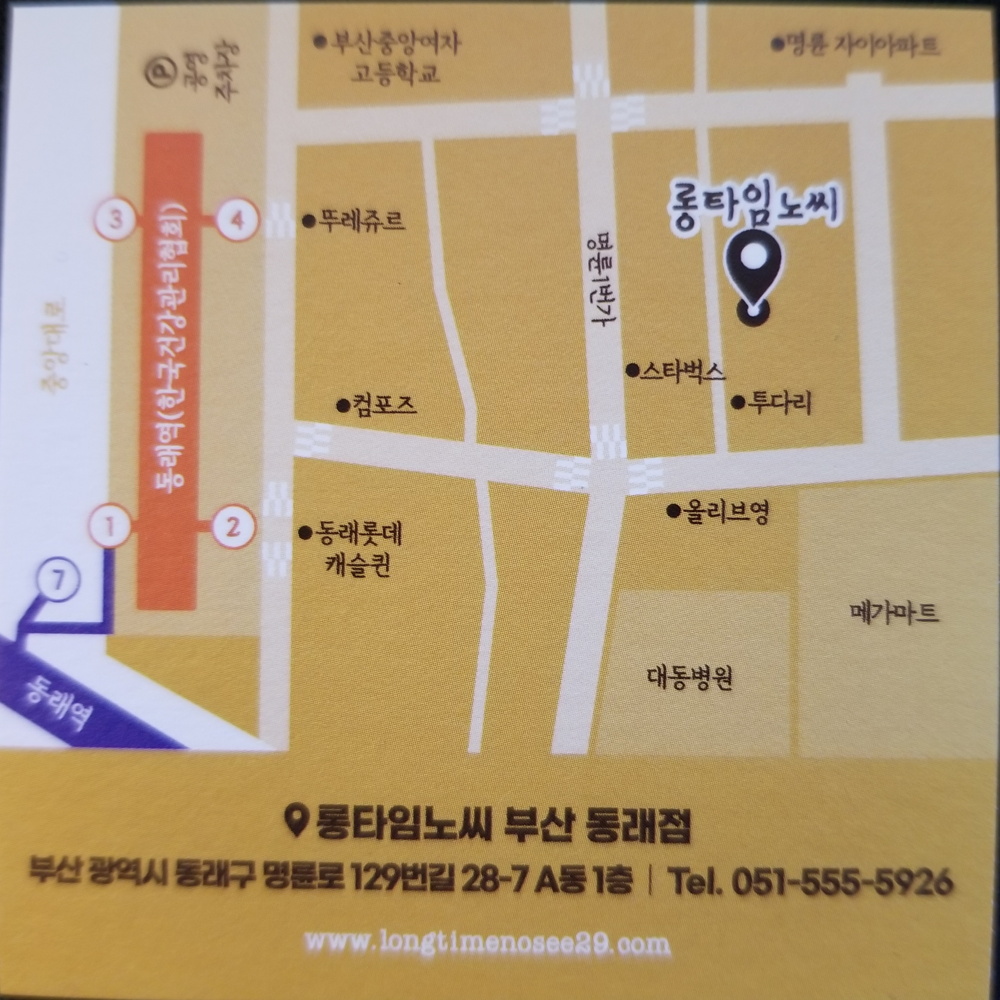
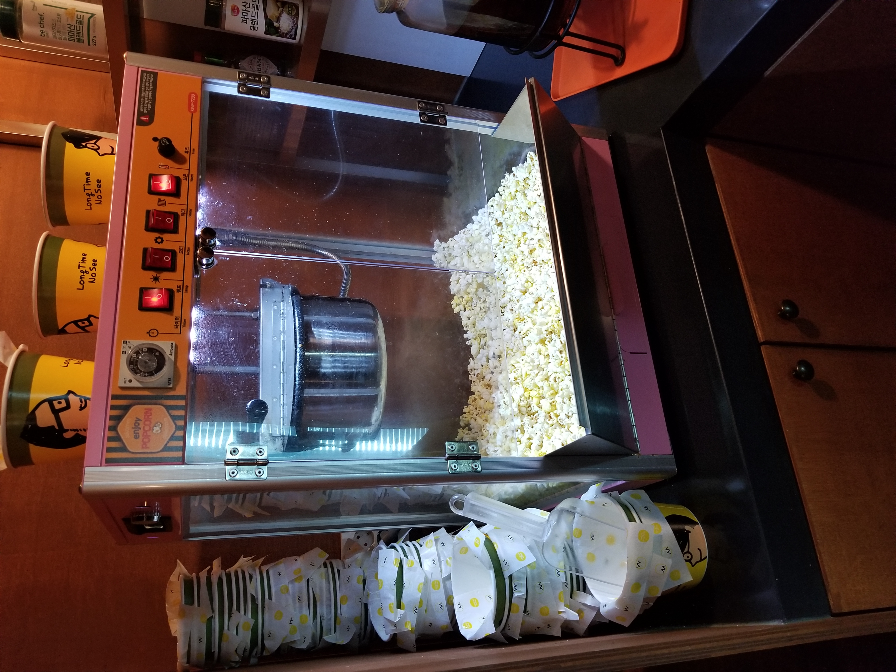
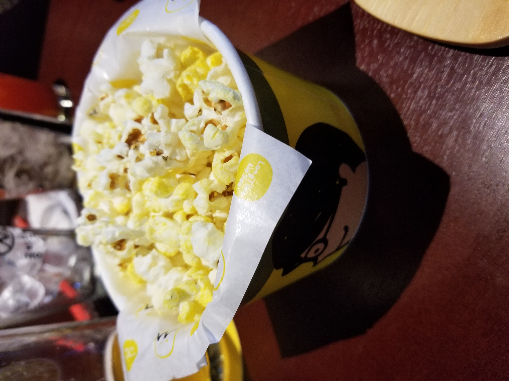
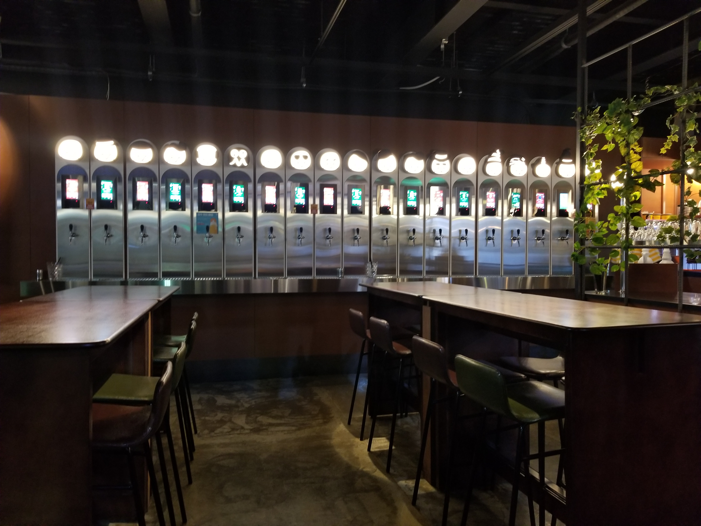
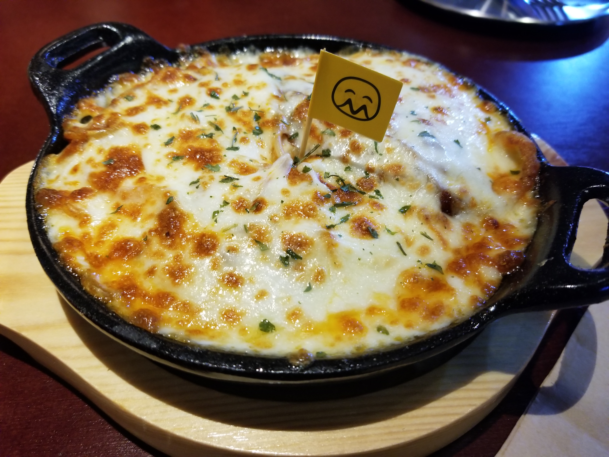

I had the pleasure of stumbling on this restaurant near the Dongnae station this weekend.
It was early in the afternoon so there was not much traffic, but I am guessing there is a good crowd on the weekends.
The restaurant is Western themed with dishes like Spaghetti, Nachos, Wings & Fries, etc all reasonably priced. Most items are under 10k krw.
The biggest draw of the restaurant is the craft beers, the waiter gives you a digital wristband for convenience to pour your own beers.
The beer is charged per ml so you can try each one if you want for a very low price, and a full glass ranges in price from about 4,000 to 13,000 krw.

The restaurant is conveniently a block away from the subway

For appetizers they serve fresh popped popcorn!

The popcorn is served like theaters with butter and salt.

They have a large selection of craft beers.

They serve a large variety of western foods, I tried the oven baked spaghetti.
Long Time No See